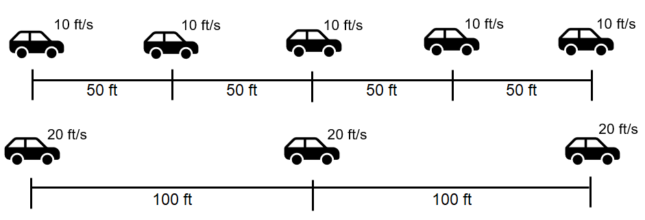
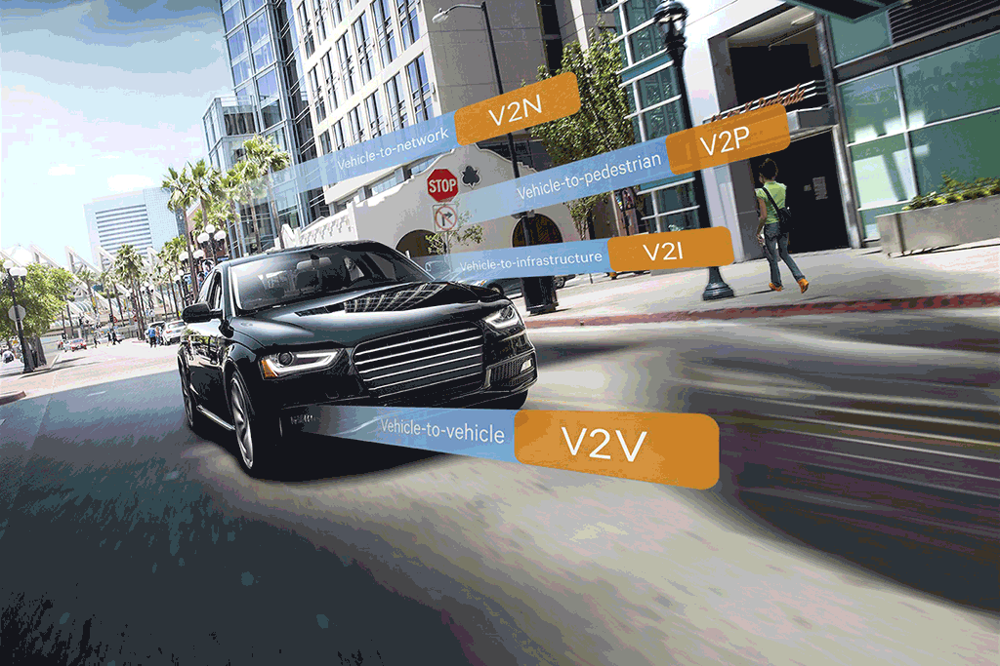

Fundamentals on Traffic Flow
Lecture
Subasish Das, Ph.D.
May 9, 2022
About me
- B.S., M.S., and Ph.D. in Civil Engineering.
- Teaching focus: transportation engineering, traffic engineering, sustainable infrastructure, CAV readiness, and AOOOOOOOI
- Took many graduate and undergraduate courses during my Ph.D. years
- Guest lectured on different transportation courses in UTSA, WSU, and TSU
- Mentored many graduate and undergraduate students at Institute of Data Science - Texas A&M University (TAMIDS)
- Conducted several 2 days long 'Data Sceince Hackthon' workshops at TAMU Civil Engineering Department
Lecture Overview
- Concepts of Traffic Flow
- Traffic Speed
- Traffic Volume
- Traffic Density
- Real-world Application
- What we have learned
A slide with videos that autoplay (intelligently)
Time mean speed (TMS)
TMS ($v_t$) is the average of all vehicles passing a point over a duration of time. It is the simple average of spot speed. Time mean speed $v_t$ is given by,
\[\begin{aligned} v_{t}=\frac{1}{n}\sum_{i=1}^nv_{i} \end{aligned} \]
where $v$ is the spot speed of $i^{th}$ vehicle, and $n$ is the number of observations. In many speed studies, speeds are represented in the form of frequency table. Then the time mean speed is given by,
\[\begin{aligned} v_t = \frac{{\sum_{i=1}^{n}{q_i v_i}}}{\sum_{i=1}^{n}{q_i}}, \end{aligned} \]
where $q_i$ is the number of vehicles having speed $v_i$, and $n$ is the number of such speed categories.
\[\begin{aligned} v_{t}=\frac{1}{n}\sum_i^nv_{i} \end{aligned} \]
Space Mean Speed (SMS)
SMS ($v_s$) provides spatial weightage instead of temporal. Consider 1 unit road, and let $v_i$ is the spot speed of $i_{th}$ vehicle. Let $t_i$ is the time the vehicle takes to complete unit distance and is given by $\frac{1}{v_i}$. For $n$ vehicles, the average travel time $t_s$ is given by,
\[\begin{aligned} t_s = \frac{\Sigma {t_i}}{n} = \frac {1}{n}{\Sigma\frac{1}{v_i}} \end{aligned} \]
We can transfor it like below
\[\begin{aligned} v_s = \frac{n}{\sum_{i=1}^{n}\frac{1}{v_i}} \end{aligned} \]
This is simply the harmonic mean of the spot speed. If the spot speeds are expressed as a frequency table, then,
\[\begin{aligned} v_s = \frac{\sum_{i=1}^{n}{q_i}}{\sum_{i=1}^{n}{\frac{q_i}{v_i}}} \end{aligned} \]
where $q_i$ vehicle will have $v_i$ speed and $n_i$ is the number of such observations.
Example Problem
The results of a speed study is given in the form of a frequency distribution table. Find the time mean speed and space mean speed.
| Speed Range (mph) | Count |
|---|---|
| 2-10 | 5 |
| 11-20 | 8 |
| 21-30 | 21 |
| 31-40 | 17 |
Solution
| No. | Speed Range (mph) | Avg. Speed (mph) or $v_i$ | Flow ($q_i$) | $v_i.q_i$ | $\frac{q_i}{v_i}$ |
|---|---|---|---|---|---|
| 1 | 2-10 | 6 | 5 | 30 | 0.83 |
| 2 | 11-20 | 15.5 | 8 | 124 | 0.52 |
| 3 | 21-30 | 25.5 | 21 | 535.5 | 0.82 |
| 4 | 31-40 | 35.5 | 17 | 603.5 | 0.48 |
| 51 | 1293 | 2.65 |
The TMS and SMS can be found out from the frequency table given above. First, the average speed is computed, which is the mean of the speed range. For example, for the first speed range, average speed, $v_i = \frac{2+10}{2}$ = 6 mph. The volume of flow $q_i$ for that speed range is same as the frequency. The terms $v_i.q_i$ and $\frac{q_i}{v_i}$ are also tabulated, and their summations in the last row. Time mean speed can be computed as, $v_t = \frac{\Sigma {q_iv_i}}{\Sigma q_i} = \frac{1293}{51} = $ 25.35 mph. Similarly, space mean speed can be computed as, $v_s = \frac{\Sigma q_i}{\Sigma \frac{q_i}{v_i}} = \frac{51}{2.65} = $ 19.23 mph.
Illustrative Example
The first vehicle is traveling at 10 ft/s with 50 ft spacing, and the second set at 20 ft/s with 100 ft spacing. Therefore, the headway of the slow vehicle $h_s$ will be 50 ft divided by 10 ft/s which is 5 sec. Therefore, the number of slow moving vehicles observed at A in one hour $n_s$ will be 600/5 = 120 vehicles. The density $K$ is the number of vehicles in 1000 ft, and is the inverse of spacing. Therefore, $K_s = 1000/50$ = 20 vehicles/1000 ft. Therefore, by definition, TMS $v_t$ is given by $v_t = \frac{12\times10+12\times20}{24}$ = 15 m/s. Similarly, by definition, SMS is the mean of vehicle speeds over time. Therefore, $v_s = \frac{20\times10 + 10\times20}{30}$ = 13.3 m/s This is same as the harmonic mean of spot speeds obtained at location A; ie $v_s = \frac{24}{12\times\frac{1}{10}+12\times\frac{1}{20}}$ = 13.3 m/s. It may be noted that since harmonic mean is always lower than the arithmetic mean, and also as observed , space mean speed is always lower than the time mean speed. In other words, space mean speed weights slower vehicles more heavily as they occupy the road stretch for longer duration of time. For this reason, in many fundamental traffic equations, space mean speed is preferred over time mean speed.
Relation between TMS and SMS ($_1$)
The relation between TMS and SMS can be derived as below. Consider a stream of vehicles with a set of substream flow $q_1$,$q_2$, ... $q_i$, ...$q_n$ having speed $v_1$,$v_2$, ...$v_i$, ...$v_n$. The fundamental relation between flow($q$), density($k$) and mean speed $v_s$ is,
\[\begin{aligned} q = k\times v_s \end{aligned} \]
Therefore for any substream $q_i$, the following relationship will be valid.
\[\begin{aligned} q_i = k_i\times v_i \end{aligned} \]
The summation of all substream flows will give the total flow $q$.
\[\begin{aligned} \Sigma q_i = q \end{aligned} \]
Similarly the summation of all substream density will give the total density $k$.
\[\begin{aligned} \Sigma k_i = k \end{aligned} \]
Let $f_i$ denote the proportion of substream density $k_i$ to the total density $k$,
\[\begin{aligned} f_i = \frac{k_i}{k} \end{aligned} \]
Relation between TMS and SMS ($_2$)
Space mean speed averages the speed over space. Therefore, if $k_i$ vehicles has $v_i$ speed, then space mean speed is given by,
\[\begin{aligned} v_s = \frac{\Sigma k_i v_i}{k} \end{aligned} \]
Time mean speed averages the speed over time.Therefore,
\[\begin{aligned} v_t = \frac{\Sigma q_i v_i}{q} \end{aligned} \]
Substituting in 2 $v_t$ can be written as,
\[\begin{aligned} v_t = \frac{\Sigma {k_i}{{v_i}^2}}{q} \end{aligned} \]
Rewriting the above equation and substituting 6, and then substituting 1, we get,
\[\begin{aligned} v_t& =&k\Sigma\frac{k_i}{k}v_i^2&=&\frac{k\Sigma {f_i}{{v_i}^2}}{q}=\frac{\Sigma {f_i}{{v_i}^2}}{v_s} \end{aligned} \]
Speed-Density Diagram
Similar to the flow-density relationship, speed will be maximum, referred to as the free flow speed, and when the density is maximum, the speed will be zero. The most simple assumption is that this variation of speed with density is linear as shown by the solid line in figure 1. Corresponding to the zero density, vehicles will be flowing with their desire speed, or free flow speed. When the density is jam density, the speed of the vehicles becomes zero.

Outline
- Overview
- Data Preparation
- Exploratory Data Analysis
- Statistical Models
- Decision Support Tool
- Next Steps

Outline
- Overview
- Data Preparation
- Data Preparation
- Data Preparation

Overview
- About this Project
- One of the Four USDOT Safety Data Initiative (SDI) Projects
- Research Problem
- A data-driven procedure to better understand the relationships between motor vehicle travel speed, roadway design elements, traffic volumes, and crash risks and severities has not yet established.
- Objective
- Examine the prevailing operating speeds on a large scale to see how speed and speed differentials interact with roadway characteristics to influence the likelihood of crashes.
Code
import React, { useState } from 'react';
function Example() {
const [count, setCount] = useState(0);
return (
...
);
}